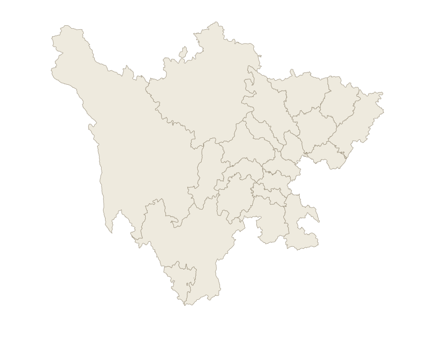

循陈寿的笔，读一部蜀汉记忆
文化知识问答 · 主题路线规划 · 门票与住宿预算。回答基于已入库资料，并区分正史、演义与地方传说。
陈寿、《三国志》、蜀汉人物与川东北地方史迹
按城市、时长与人群给出游览顺序和风险提示
景区票价与酒店预算区间估算
一览蜀地

圆点表示市州驻地，文字偏移处用引线连接。阿坝州驻马尔康、甘孜州驻康定、凉山州驻西昌。轮廓为地理位置示意。
轮廓与坐标来源：阿里云 DataV 地理数据。